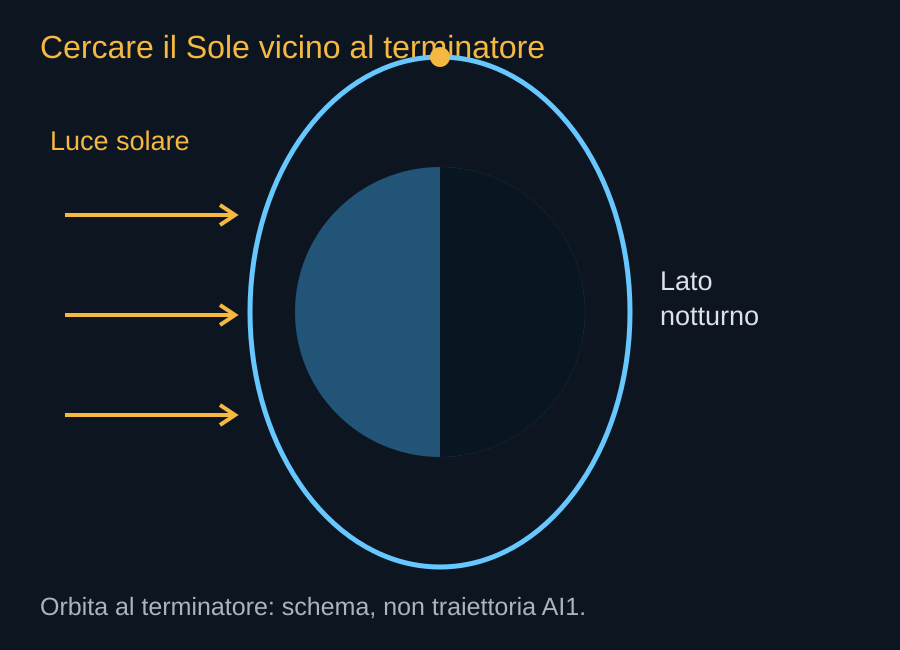

L’orbita è parte dell’impianto energetico. Stabilisce quanta luce può raggiungere il satellite, quale ambiente termico incontra, quali regioni osserva e con chi deve condividere lo spazio. Non si sceglie prima un centro di calcolo e poi una quota qualunque alla quale parcheggiarlo. La traiettoria entra nel progetto dei pannelli, della rete, della propulsione e del fine vita.
Che cosa significa eliosincrona
Un’orbita eliosincrona sfrutta la lenta rotazione del piano orbitale, dovuta alla forma non perfettamente sferica della Terra, per mantenere una relazione regolare con il Sole. Il satellite attraversa una determinata latitudine a un’ora solare locale simile. Questa proprietà è utile per confrontare osservazioni della superficie con condizioni di illuminazione ripetibili. Non implica che il veicolo rimanga sempre fuori dall’ombra terrestre.
Per cercare lunghi periodi illuminati si possono scegliere piani vicini al terminatore, il confine fra giorno e notte, con passaggi associati all’alba o al tramonto. La geometria stagionale, la quota e l’orientamento reale determinano l’eventuale durata delle eclissi. La frase aziendale sull’energia continua descrive un obiettivo del sistema; la sua realizzazione va verificata sulle orbite effettivamente utilizzate.


Il tempo di un giro
Per un’orbita circolare si può stimare il periodo con T = 2π√(r³/μ), dove r è la distanza dal centro terrestre e μ il parametro gravitazionale della Terra. Usando un raggio medio di 6.371 km e μ di circa 398.600 km³/s², a 550 km si ottengono circa 95,5 minuti. È un calcolo didattico: non ricostruisce la posizione di alcun satellite Starmind.
Se in questo esempio il Sole giacesse nel piano orbitale, l’eclissi massima sarebbe dell’ordine di 35 minuti per giro. Cambiando l’angolo fra il Sole e il piano si riduce o scompare. La stessa quota può quindi presentare condizioni energetiche molto diverse. Il numero di ore di luce non può essere ricavato dalla sola etichetta “orbita bassa”.

Quote che cambiano il fine vita
Più in basso, l’atmosfera residua può aiutare a rimuovere un veicolo guasto, ma richiede anche propulsione per mantenere la quota e rende l’ambiente sensibile all’attività solare. Più in alto, la resistenza diminuisce e la permanenza di un oggetto non controllato può diventare molto più lunga. La scelta deve considerare il satellite sano e quello che non può più eseguire comandi.
Il deposito iniziale FCC comprende un intervallo ampio, da 500 a 2.000 km, e orbite a 30 gradi o eliosincrone. La risposta di settembre discute anche gusci di esempio vicini a 550–585 km. Non bisogna presentare questi esempi come prova che l’intero progetto iniziale sia già stato sostituito da un’unica quota. Ogni configurazione futura dovrà avere analisi coerenti di energia, traffico e dismissione.
Il pianeta sotto la traiettoria
Le orbite eliosincrone ospitano molte missioni di osservazione. Le costellazioni devono coordinare non soltanto la posizione abituale dei propri veicoli, ma anche le fasi di salita e discesa, durante le quali attraversano altre regioni. Suddividere lo spazio in gusci non elimina questi attraversamenti.
Un piano orbitale favorevole al Sole può inoltre essere meno favorevole a certi collegamenti o ai siti di lancio disponibili. La scelta diventa un compromesso fra potenza, massa trasportabile, rete e sicurezza. Per questo il disegno dell’orbita non è un’aggiunta astronomica al progetto: è una delle sue decisioni industriali.
Fonti pubbliche e tracce
- NASA Earth Observatory, catalogo delle orbite. Principi di quota, inclinazione e orbite eliosincrone. Gli esempi quantitativi del libro sono calcoli didattici originali.
- FCC, DA 26-113: domanda accettata per l’istruttoria. 4 febbraio 2026. Deposito del 30 gennaio, fino a un milione di satelliti, 500–2.000 km. Accettazione procedurale, non autorizzazione.
- SpaceX, risposta alla FCC datata 16 settembre 2026. Documento primario scaricato e letto. Incontro del 14 settembre; inviluppi a pagina 8, rientro a pagina 9. Dichiarazioni e modelli del richiedente, non decisione della FCC.
- NASA, stato dell’arte: alimentazione elettrica. Pannelli, accumulo e distribuzione. Non contiene una certificazione dei componenti AI1.